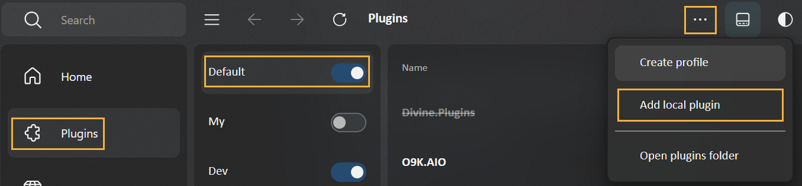
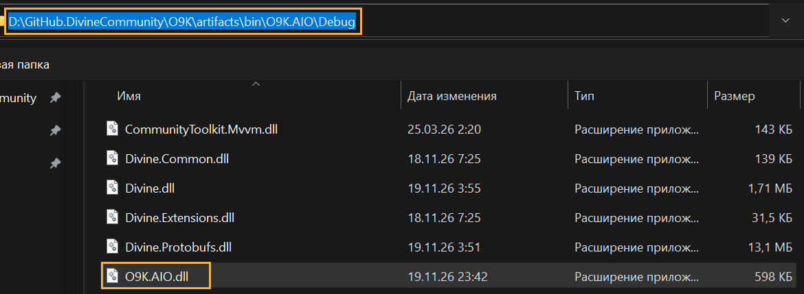
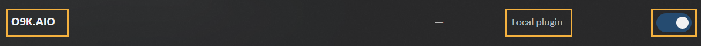

Getting Started
Local plugins
If you already have a built plugin DLL, you can add it directly in the Divine desktop client. This guide uses O9K.AIO.dll as an example.
1. Choose a plugin profile
Open Divine and select Plugins in the left sidebar. Click the name of the profile where you want to add the plugin, such as Default. The right pane shows the plugins in that profile.
In the top bar, click ⋯ and choose Add local plugin.

2. Select the plugin DLL
In the file picker, browse to the output folder, select O9K.AIO.dll, and click Open. You can also paste the full path into the File name field. Here is an example path to the Debug build.
D:\GitHub.DivineCommunity\O9K\artifacts\bin\O9K.AIO\Debug\O9K.AIO.dll

If your checkout is elsewhere or you built a different configuration, use the path to your own build. If the file is missing, build the plugin first and then select the DLL from the build output.
3. Check that the plugin is enabled
Look for the O9K.AIO row that shows Local plugin in the Author column. Check that the profile switch on the left and the switch at the far right of the local plugin row are both on. If you also have the store version, its name may appear crossed out while the local build is active.
If you cannot find the local row, check that you are viewing the profile you selected before opening the file picker.

4. Load an updated build
If you rebuild the plugin, leave the updated DLL at the same path so Divine can find it. When Divine is already running in the game, return to the game and press F5 to reload local plugins if you use the default reload key. If the new build is in a different folder, add that DLL from the client and check which build is enabled in your profile.
Build a plugin from source
- Install the .NET 11 SDK and an IDE. Use Visual Studio with a .NET development workload or JetBrains Rider.
- Clone DivinePlugins/Samples and open the solution or project. Use the sample's
global.jsonto select the .NET SDK and pin theDivine.Sdkversion. The plugin project declares<Project Sdk="Divine.Sdk" />. - Build the project in your IDE and add its output DLL using the steps above. You can also select the plugin's
.csprojin Add local plugin and let Divine build the project for you.